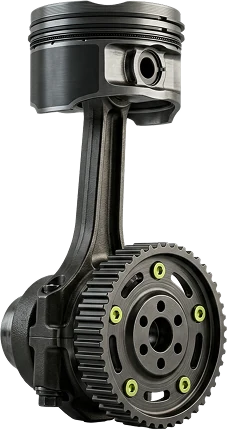
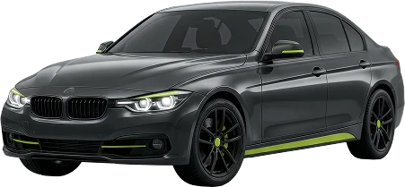
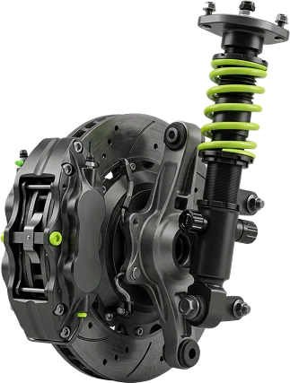
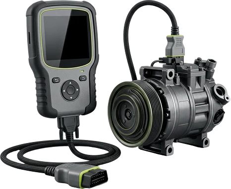
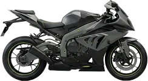
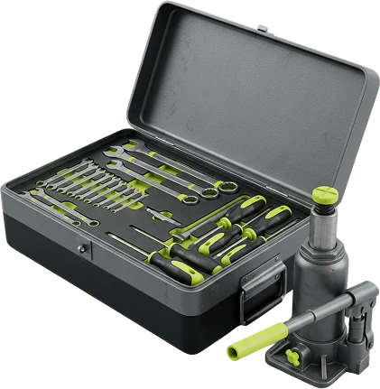

Двигатель и трансмиссия
Ремонт двигателяЗамена маслаЗамена ГРМРемонт КППРемонт сцепленияСистема охлаждения
Ремонт, диагностика и шиномонтаж в Минске, ул. Франциска Скорины, 52, корп. 10.

Легковые, коммерческие и отечественные
Мотоциклы и квадроциклы
Под заказ
Наличными и картой




Цены зависят от машины и работы — назовём по телефону.
Помогают подобрать запчасти, слесари работают качественно и честно. Только хорошие впечатления.
Был на шиномонтаже — быстро и качественно. Подсказали, что резина не по сезону, и дали толковые советы.
Порядочные специалисты. Менял шины на двух машинах — каждый раз управились минут за двадцать.
Ездим сюда больше девяти лет. Всегда чётко, понятно и быстро, даже когда на территории много машин. Есть из чего выбрать по запчастям.
Листайте вбок →
Расскажите, что с машиной или мотоциклом
Подберём удобный день и час
ул. Франциска Скорины, 52, корп. 10
